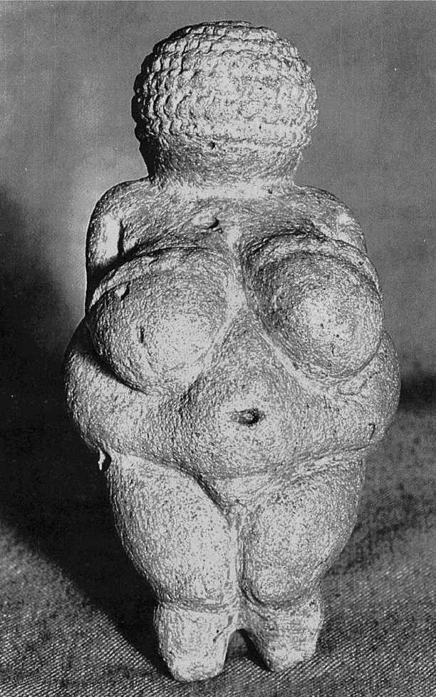

我们所在的地球围绕着太阳旋转，太阳只不过是我们银河系中上百亿颗恒星中的一颗，而银河系又只是整个宇宙几百万个星系中的一个。当本书在以后的章节中回溯人类的经历和人类的切身之事时，我们一定要记住这个如此悬殊的对比。比较好记的一个类比就是，地球在宇宙当中小得就像太平洋上的一粒尘埃。
地球形成于约50亿年以前，而大约40亿年前地球上才出现最早的生命，即原生的单细胞生物。尽管人们历来都认为这种原始的生命与非生物有着质的区别，但现在的科学家们已不再接受这种将生物与非生物截然分开的观点，而是把生物看作由非生物自然进化而来。他们按照组织的分类等级标准将所有的物质加以分类；无机物就是在这一组织的某一等级转变为有机物的。说得具体些，电子、质子和中子相结合，形成各种原子；各种原子相结合，组成各种分子；各种分子再组成有机化程度不等的聚合体，其中某一类构成了生物。
生物又从低等级不断地向高等级进化：由微生物进化到原始植物，如海藻；继而进化到无脊椎动物，如水母、蠕虫；最终进化到脊椎动物。这些脊椎动物和其旁系中的某些无脊椎动物及植物一起，约于3亿年前开始成功地适应陆地生活。最早适应陆地生活的是两栖动物，随后是史前时期的大批爬行动物，接着是鸟类，最后则是哺乳类动物。哺乳类动物在生物界占据统治地位已达6000万年。
几乎所有的科学家都认同这种说法：人类属于动物王国——更明确地说，属于灵长类这一目；和人类一起同属于灵长类的，还有树鼩、狐猴、眼镜猴、猴子及类人猿。若干研究领域都为这一说法提供了大量证据。解剖学家发现，从总体来看，人类与其他高级动物在骨骼、肌肉和器官构造方面有不少基本相似处。胚胎学家注意到，人类的胚胎在不同的生长阶段显示出某些低等生物的特征，如一个月时有半圆形的鳃，两个月时出现发育不全的尾巴。人类学家指出，对人类化石的研究证明，人类是由普通的类人猿进化而来的。其他科学家也发现了许多可表明人类与其他动物之间的联系的类似迹象，如：猿类血液的化学成分和人类的极其相似，猿类和人类身上有共同的寄生物，猿类和人类学习的方式也很相似。
人类祖先的演变发生在有6到7次大冰期和5到6次间冰期的更新世时代。当时急剧的环境变化迫使所有的动物必须能不断地适应和再适应新的环境。能否适应的关键不是取决于蛮力，也不取决于耐寒的能力，而是取决于智力的不断增长，取决于能否运用其智力使自己较好地适应环境的需要。当然，这也就是人类能在地球上居于无可争辩的首位的秘密。首先，人类的才能是多方面的。人类与长臂猿或北极熊不同：长臂猿双臂柔软细长，只适应森林生活；北极熊白色的毛皮很厚，只适应北极环境；而人类，绝不是只适应一种环境。更准确地说，人类靠自己的大脑，而不是自己的身体，能适应任何环境。
人类是自然选择的产物，是从一系列人类的祖先即近似人形的原人进化而来的。原人中有一部分已能使用简单的石制工具和武器。最早出现的原人是南方古猿。一般认为，它们最早出现在非洲东部和南部的热带草原上，距今400多万年。这种灵长类动物的骨盆和腿与现代人极为相似，但其脑容量只有人类的三分之一，几乎还不及现存的类人猿的脑容量大。因此，这种与人相像的两足动物（原人不再用四肢行走）的运动系统是与猿脑般的大脑结合在一起的。
对处于这种发展水平的灵长类动物来说，非洲大草原是很理想的环境。那里气候温和，即使缺衣少穿，也能很好地生活下去。而且，辽阔的大草原与茂密的森林和荒凉的沙漠不同，那里有水源，也有可供食用的动物。因此，尽管南方古猿的工具很简单，但它们依然能享用到丰盛的食物，其中包括蛋、蟹、龟、鸟、啮齿动物，还有小羚羊。小羚羊很容易捕猎到，因为它们一遇危险便伏在草丛中一动不动。
南方古猿在非洲平原上漫游了200多万年，在此期间，这种类人动物中先后有好几个物种都经历了出现、兴旺、消亡的过程。由于每年都有许多新发现，而相关的理论又必须随着这些新发现而作修正，所以，人类学家们尚不能在一些枝节问题上取得一致意见。比如说，最近在爪哇出土的人类化石就对传统的“非洲起源”理论提出了挑战。“非洲起源”理论认为，最早的人类起源于非洲，然后从那里迁徙到亚洲、欧洲、美洲和澳洲。爪哇出土的化石古老得惊人，足以支持人类多地域起源论者的观点。人类多地域起源论者认为，早期的人类是在世界上的许多地方独自起源和进化的。[2]无疑，在未来的岁月中，人们将会有更多的发现，所以，围绕人类起源问题，还会提出更多的新理论来解释新的化石发现。
尽管不知道确切的年代和准确的地点，但却可以肯定，早在4万年以前，人类，或者说智人（具有思维能力的人），终于出现了。而最近的考古发掘则显示，人类的出现比这一时间还要早得多。从最宏观的视角来看，人类的出现是地球发展进程中的第二大转折点。第一大转折点是生命从无机物中脱胎而出。在第一大里程碑式的转折之后，所有的生物种类都通过适应其生存环境，以基因突变和自然选择的方式进化。也就是说，生物的基因能够适应环境的变化——这一点在气候变化剧烈的更新世时期表现得尤为明显。但是随着人类的出现，这一进化过程发生了逆转。人类通过改变环境来适应自己的基因，而不再是改变自身的基因去适应环境。今天，随着人类关于基因结构和功能的知识不断增加，人类很快就能够既改变其所处的环境，又改变自己的基因，地球发展进程中的第三个划时代的转折点也即将来临。
人类，只有人类，能创造自己想要的环境，即今日所谓的文化。其原因在于，对于同此时此地的现实相分离的事物和概念，只有人类能予以想象或表示。只有人类会笑；只有人类知道自己会死去。也只有人类极想认识宇宙及其起源，极想了解自己在宇宙中的位置和将来的处境。
由于具备这些独特的革命性能力，人类不用经过生理突变便能很好地应对周围的环境。人类文化以一种全新的非生物学方式拥有了北极的皮草、沙漠的贮存水和水中的鳍。更具体地说，人类文化包括工具、衣服、装饰品、制度、语言、艺术形式、宗教信仰和实践。所有这一切使人类能适应物质环境和他们的同伴。实际上，我们在接下来的章节中所讲述的人类故事就是我们从旧石器时代开始到现今时代所创造的一连串文化的故事。
当人类运用其超凡的大脑去改变其所处的环境以适应其基因——相反的情况在过去是压倒性的模式——他就已经远远超出地球上的其他物种了。这也解释了为何人类当年在非洲大草原刚刚起源时毫不起眼，而今天竟成了地球上居统治地位的物种。但是这也引发了令人困惑的问题：为什么人类现在显得不能控制自己创造出来的环境？为什么人类日渐觉得自己创造的环境正在变得越来越不适合居住？
答案似乎在于基因进化与文化进化的根本差别。基因进化通过基因突变起作用。如果一个物种的基因突变符合自然选择的要求，这个突变就会在几千年的短短生物学时期里显现于该种群。其实这种进化模式也就是人类由更新世灵长类动物一直进化到智人所经由的道路。
与此相对应的则是，文化进化通过引入新工具、新思想或新制度能够（并且已经）在几乎一夜之间就改变了整个社会。只要看看蒸汽机是如何在19世纪时改变了整个世界，看看内燃机在20世纪中是如何发挥其功用，再看看今天的核能和计算机又是如何使我们的环境大为变样，你就不难理解爱因斯坦为何要警告我们：人类现在面临的要么是新的“思维方式”，要么是“空前的灾难”。
关键问题似乎在于，在技术变革和使之成为必需的社会变革之间，存在一个时间差。造成这个时间差的原因在于：技术变革能提高生产率和生活水平，所以很受欢迎，且很快便被采用；而社会变革则由于要求人类进行自我评估和自我调整，通常会让人感到受威逼和不舒服，因而也就易遭到抵制。这就解释了当今社会的一个悖论：虽然人类正在获得越来越多的知识，变得越来越能依照自己的意愿去改造环境，但却不能使自己所处的环境变得更适合于居住。简言之，人类作为一个种群所面临的问题是，如何使自身不断增长的知识与运用这些知识的智慧保持平衡。我们将在后面的章节中看到，学会如何平衡知识和智慧正成为一个非常紧迫的问题，以致正如爱因斯坦所警告的那样，人类作为一个种群的未来取决于这种平衡的结果。

图1 威灵道夫的维纳斯，这尊石像雕刻于公元前15000年至前10000年间。从该雕像中人物形体的比例可以看出人类早期的生殖崇拜倾向。
我们将会看到这一平衡问题已在整个人类历史上反复出现，并在今天由于我们的智慧无法赶上人类日益增长的知识而出现得更为频繁、更为急迫。